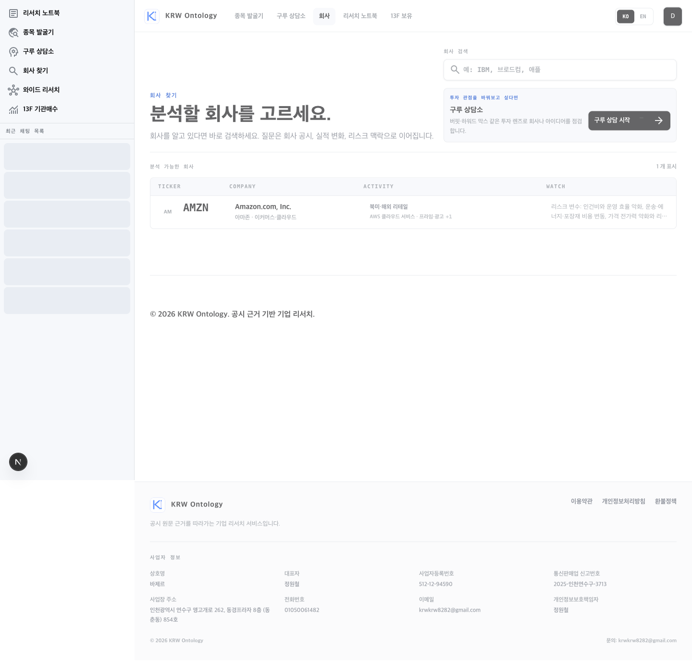

기존 디자인을 유지하는
첫 진입 흐름 계획
현재 흐름

첫 화면에서 전체 메뉴를 본다
노트북부터 13F까지 기능을 설명
사용자가 다시 무엇을 할지 판단
제안 흐름
“오늘 무엇을 확인하고 싶나요?”
검색·아이디어 입력·가정 점검 중 하나
답변 이후에만 고급 기능을 소개
첫 화면의 선택지는 정확히 3개로 제한한다. 이 수는 사용자에게 필요한 경로를 모두 제공하면서도 현재의 6개 메뉴보다 판단 부담이 작다. 고급 기능은 숨기는 것이 아니라, 첫 결과 뒤의 “다음으로 해볼 수 있는 것”에서 문맥 있게 보여준다.
화면 구성
회사 목록 상단 / 신규 사용자만
회사 분석
회사명이나 티커를 알고 있어요. 공시·실적·리스크를 확인합니다.
회사 검색 시작 →
조건으로 종목 찾기
산업·변화·리스크 조건에 맞는 후보를 찾습니다.
아이디어 적기 →
투자 가정 점검
이미 가진 투자 아이디어의 좋은 점과 의심할 점을 정리합니다.
관점 선택하기 →
지금은 둘러볼게요
기존 회사 목록을 바로 봅니다. 이 선택은 언제든 다시 시작할 수 있습니다.
회사 목록 보기 →
데스크톱에서는 3개 선택지를 한 행에 배치하고, “둘러보기”는 카드가 아닌 조용한 텍스트 링크로 둔다. 모바일에서는 동일한 순서로 세로 배치한다.
┌──────────────────────────────────────────────────────┐ │ 회사 찾기 │ │ 오늘 무엇을 확인하고 싶나요? │ │ 지금 가진 정보에 맞는 시작 방법을 고르세요. │ │ │ │ ┌──────────────┐ ┌──────────────┐ ┌──────────────┐ │ │ │ 회사 분석 │ │ 조건으로 │ │ 투자 가정 │ │ │ │ 회사명·티커 │ │ 종목 찾기 │ │ 점검 │ │ │ │ [검색 시작 →]│ │ [아이디어 →]│ │ [관점 선택 →]│ │ │ └──────────────┘ └──────────────┘ └──────────────┘ │ │ │ │ 지금은 둘러볼게요 │ └──────────────────────────────────────────────────────┘
선택 뒤의 동작
| 선택 | 즉시 이동 | 첫 입력 | 첫 답변 뒤에 소개할 기능 |
|---|---|---|---|
| 회사 분석 | 동일 화면의 기존 회사 검색창으로 전환·포커스 | 회사명 또는 티커 | 관심/보유 저장, 투자 가정 점검 |
| 조건으로 종목 찾기 | /discover?entry=onboarding | 아이디어부터 입력. URL·파일은 이후 선택사항으로 노출 | 후보 중 회사 분석, 와이드 리서치 |
| 투자 가정 점검 | /guru?entry=onboarding | 회사 또는 투자 아이디어 | 선택한 관점으로 이어서 질문 |
중요: 현재 종목 발굴기는 URL → 파일 → 아이디어 순서다. 온보딩에서 들어온 사용자는 아이디어를 이미 갖고 있으므로, 아이디어를 첫 단계로 올리고 URL·파일은 결과 화면 또는 입력 도구에서 추가할 수 있게 한다.
기존 디자인을 해치지 않는 규칙
유지
- 기존 `canvas`, `surface`, `hairline`, `primary` 토큰
- Pretendard/시스템 폰트와 모노 소형 레이블
- 8px 카드·버튼 라운드와 얇은 보더
- 검정 기본 CTA, 파랑은 선택·포커스·화살표에만
- 현재 회사 목록의 레이아웃과 사이드바
추가하지 않음
- 어두운 배경의 풀스크린 모달
- 새 색상 팔레트·그라데이션·일러스트
- 기능을 가르치기 위한 긴 투어
- 카드마다 다른 아이콘·강한 애니메이션
- 첫 방문에 가격/플랜 선택 요구
Open Design 검토 반영
Open Design을 로컬 레퍼런스 컬렉션으로 설치해 검토했다. 이 프로젝트에는 Minimal 디자인 시스템과, 상태·접근성·모션·인지 부하에 대한 Craft 규칙이 있다. KRW에는 그중 다음 원칙만 적용한다.
| Open Design 검토 기준 | 이번 화면에 적용 |
|---|---|
| Minimal: 명확한 헤드라인 → 보조 문구 → 주 행동, 여백 우선 | 현재 회사 목록 상단과 같은 가벼운 헤더, 카드 내부 여백 16–24px 유지 |
| Color: 한 화면에서 강조색 사용을 엄격히 제한 | 회사 분석만 검정 CTA로 강조하고 파랑은 1차 상호작용 신호에만 사용 |
| Laws of UX: 3–5개 선택지, 점진적 공개 | 3개 목적 선택 후 관련 기능만 보여주고, 노트북·13F·와이드는 첫 답변 후 소개 |
| Animation discipline: 상태 전환을 위한 짧은 모션만 | 카드 선택→검색 전환은 150–200ms, 이동 축 모션은 reduced-motion에서 제거 |
| Accessibility + State coverage | 카드는 실제 링크/버튼, 명확한 포커스 링, 검색 포커스 이동, 로딩·빈 결과·오류 상태를 모두 유지 |
전환·상태 계획
- 선택 전: 세 카드와 “둘러보기” 링크. 키보드 탭 순서는 카드 1→2→3→둘러보기.
- 회사 분석 선택: 패널이 150ms 안에 사라지고 기존 검색 입력창으로 포커스를 이동한다. 코치마크는 별도로 중복 노출하지 않는다.
- 종목 발굴 선택: 아이디어 입력 화면을 먼저 보여준다. 빈 제출 시 “산업, 변화, 리스크 중 하나를 적어주세요.”를 입력 아래에 표시한다.
- 가정 점검 선택: 구루 렌즈를 설명하는 투어 대신 회사/아이디어 맥락을 먼저 잡고, 렌즈 선택은 다음 단계에 둔다.
- 첫 답변 완료: 결과 하단에 “다음으로 해볼 수 있는 것” 2개만 표시한다. 예: 관심 종목 저장, 다른 관점으로 점검.
- 둘러보기: 회사 목록을 그대로 보되 강제 투어는 다시 띄우지 않는다. 도움말에서만 기존 투어를 볼 수 있다.
구현 단위
- 첫 PR: `FirstResearchChoice` 컴포넌트를 만들고, 신규 사용자에게만 `/companies` 상단에 표시한다. 기존 자동 `ProductOnboardingTour`는 기본 노출을 끈다.
- 둘째 PR: 검색창 포커스, `discover`의 아이디어 우선 진입, `guru`의 온보딩 진입 파라미터를 연결한다.
- 셋째 PR: 첫 선택 → 회사/아이디어 입력 → 첫 질문 전송 → 첫 답변 완료 이벤트를 기록한다. 선택별 첫 답변 완료율을 비교한다.
참고 화면


Lazyweb MCP의 플로우 데이터베이스는 현재 이 환경에 연결되어 있지 않아, Lazyweb 플로우 방식(순서가 있는 사용자 여정)과 최신 웹 사례로 보완했다. 이 보고서는 구현 전 검토용이며 제품 코드는 바꾸지 않았다.